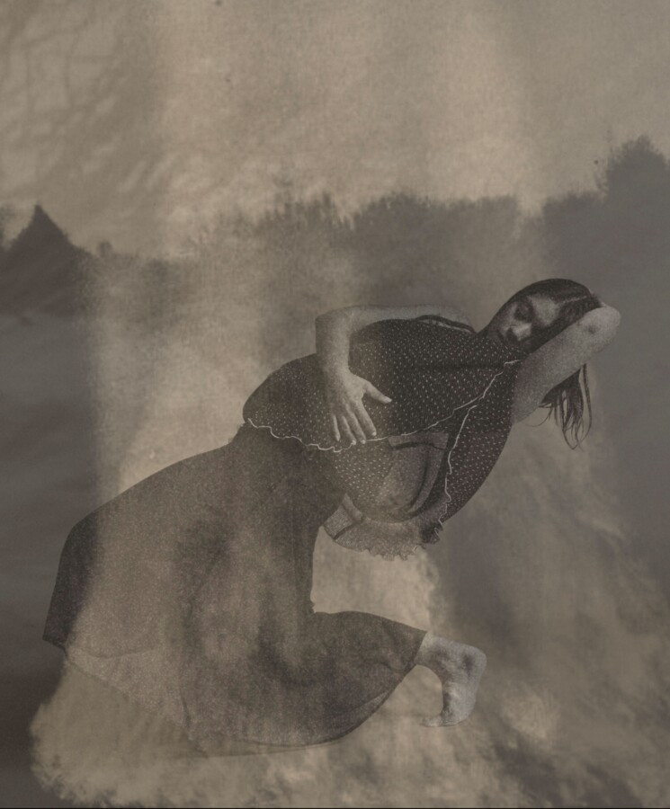

PARA.MAR Dance Theatre – “MUJERES” – Community Preview
The Chicago-based contemporary ballet company PARA.MAR Dance Theatre presents a community preview of the company’s first ever ballet, “MUJERES” choreographed by company founder and artistic director Stephany Martinez“ A shifting terrain of myth, memory, and reflection, ‘MUJERES’ (‘Women’) is inspired by versions of Chilean poet and Nobel Laureate Gabriela Mistral’s “Locas Mujeres.” Tickets are “Pay what you can;” suggested range $10-$30. For tickets: https://www.paramardance.com/up-next